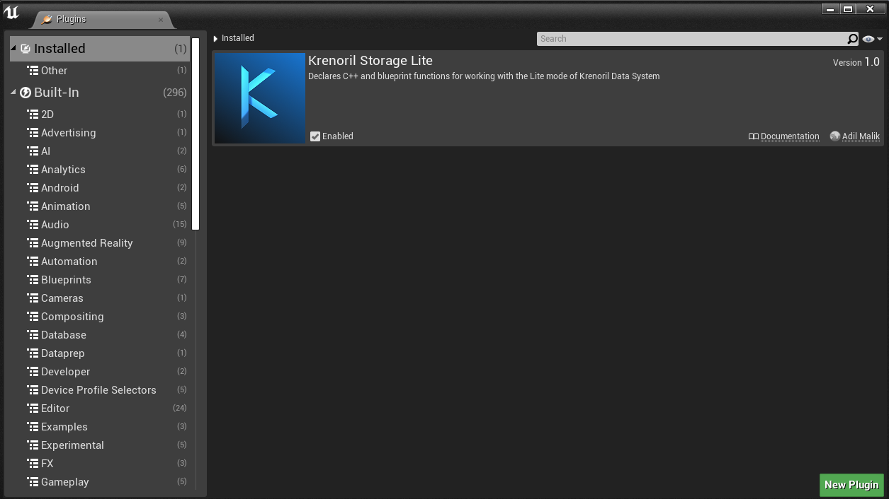
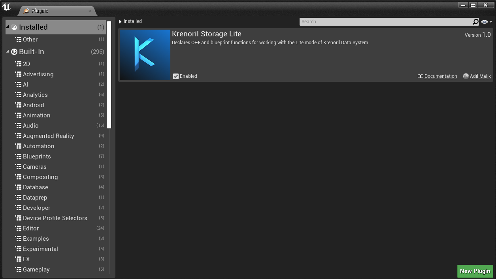
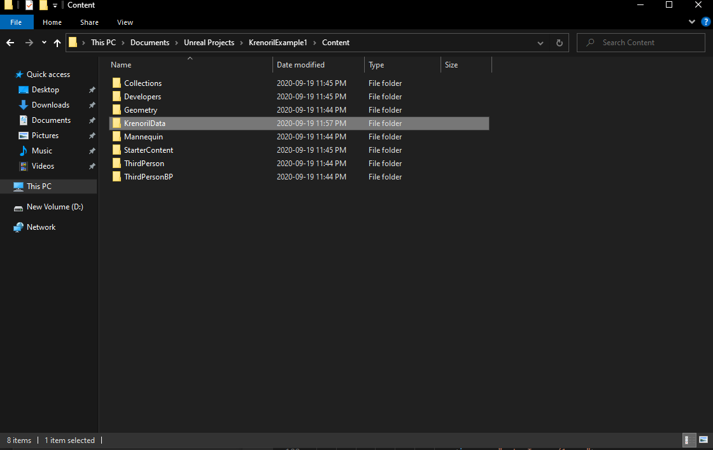
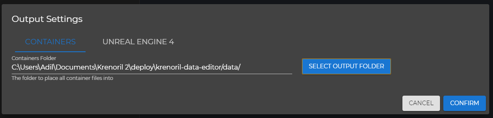

Welcome to Krenoril!
Follow the below instructions to get started with the Krenoril Data System. Please note that you must have purchased and downloaded the Krenoril Data System lite plugin from the Unreal Engine marketplace to use Krenoril in Lite mode.
Setup
1. Enable the "Krenoril Storage" plugin
Once you have installed the "Krenoril Storage" plugin from the Epic Games Launcher, you must enable it for your project. Open up the plugin browser from the UE4 editor, and search for the "Krenoril Storage"
plugin. Check the "Enabled" checkbox to enable this plugin for your project.

If you want to use the Krenoril API in C++, then you must also add in the plugin as a module dependency in your project's Build.cs file. Open up Visual Studio, and add


If you want to use the Krenoril API in C++, then you must also add in the plugin as a module dependency in your project's Build.cs file. Open up Visual Studio, and add
PublicDependencyModuleNames.AddRange(new string[] { "KrenorilStorageLite" });
to the file. If you don't want to use the C++ API, then this step can be skipped.
2. Set up Krenoril Data Editor for your project
- Open up your project's "Content" folder in the Windows file explorer, and create a folder called "KrenorilData" there. This will be where Krenoril's data files are stored for your project. 
- Open the Krenoril Data Editor application in administrator mode by running the admin.bat file
-
Click on the "Settings" option in the menu bar

-
In the modal that opens up, click on the
"Select Output Folder" button.

In the opened file picker, navigate to the previously created "KrenorilData" folder in your project's Content folder and select it.
- Click the "Confirm" button to save your changes (if you do not click this button, the changes made above will not have been changed!)
3. Get started with the Krenoril editor
You've finished setting up the Krenoril plugin for your project!
Now, you can actually use the Krenoril Data Editor to create data records that can be loaded dynamically in your game. Instructions for using the application can be found here.